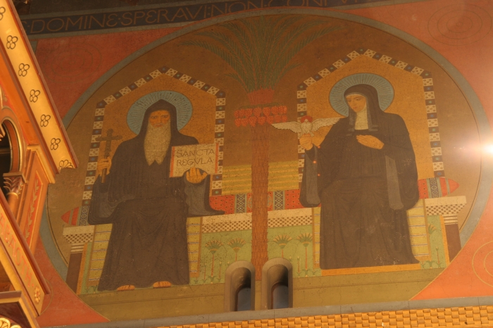

<?php
	$tabulka = true;

	require ('_include/php/zaklad.php');

	titulek ('Beuronské umìní&nbsp;-&nbsp;opatství sv. Gabriela');

	menu ('Zpìt','gabriel-dopredu-01.html');

	zahlavi ();
?>



<p>
	I zde na ji¾ní stranì <span class="vysvetleni" title="Knì¾i¹tì">presbytáøe</span> se nachází podobnì jako na vstupním portálu zobrazení sv. Benedikta se
	sv. Scholastikou. Oba sedí na ozdobeném trùnì, který je rozdìlen palmou. Scholastika dr¾í v tomto pøípadì v ruce holubici.
	Benedikt je jinak zobrazen se stejnými atributy&nbsp;-&nbsp;køí¾em a knihou øeholí.
</p>

<?php
  zapati ();
?>
